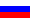
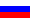
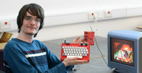

Язык: 
 English |  Русский
English |  Русский
Добро пожаловать! На этом сайте вы можете найти ссылки на мои проекты по электронике. Если вы хотите сделать что-то из этого сами, вы можете заказать изготовление печатных плат у производителя, например, «JLCPCB», «Elecrow» или «PCBWay». Большинство компонентов можно приобрести в магазинах «Mouser» или «Digikey». В России компоненты можно приобрести, например, в компаниях «ЧИП и ДИП» или «Электроника и связь». Думаю, китайский дистрибьютор «LCSC» также должен поставлять продукцию в Россию.
Если у вас есть вопросы по схеме или вы хотите предложить модификации/улучшения, вы можете связаться со мной по электронной почте:
al5338 { буква «a» с кругом вокруг нее } seznam { точка } cz
Я проверяю свой почтовый ящик примерно раз в неделю.
Все мои творения свободны для использования; вы можете распространять, изменять и продавать их, как вам заблагорассудится.
Оригинальная схема «Понг» от Атари 1972 года, разделенная на пять миниатюрных печатных плат размером 100x100мм для возможности модификации и расширения.
Дальнейшее развитие варианта ZX Spectrum «Ленинград-1». Исправлены все основные проблемы моей первой реплики, при этом требуется меньше компонентов!
Разработанный в России в 1990-х годах, этот кодер преобразует RGB-видео с TTL-уровнем в цветное композитное видео стандарта PAL. Он является полезным периферийным устройством для компьютера «Ленинград-М» и подключается к нему напрямую, не требуя кабелей.
Эта игровая консоль основана на схеме, разработанной с нуля японским энтузиастом в 1980-х годах. На сегодняшний день для нее написано более двух десятков игр! Эта версия на базе печатной платы оснащена подключаемыми картриджами и совместима с распространенными контроллерами Sega.
Карманный учебный компьютер Z80 с 24 КБ памяти с батарейным питанием, основанный на схеме, разработанной в Чехословакии в 1984 году. Это отличная отправная точка для изучения ассемблера Z80!
Один из многих нестандартных часов Берлина в компактном форм-факторе. Простая и доступная схема на основе дискретной КМОП-логики.
Реплика варианта ZX Spectrum «Ленинград-1» с механической клавиатурой и некоторыми усовершенствованиями схемы, интегрированными на печатную плату. Спроектирована так, чтобы ее было легко собрать.
Разработан в 1983 году для поиска и устранения неисправностей в самодельном компьютере «Галаксия» из Югославии. Универсальный логический пробник TTL, который показывает колебания с помощью 4 светодиодов.
Небольшие, простые аудиоусилители, которые могут работать при напряжении питания 5-12 В постоянного тока. Отлично подходят для различных приложений.
Композитный мод для SMS2 настолько органичен, что кажется, будто его установила сама Sega. Никаких проводов или сверления корпуса!
Разные интересные вещи. Это «музейный» раздел этого сайта.
Если вам понравился этот сайт, рекомендую также ознакомиться с этой подборкой сайтов!
Последнее обновление 30 ноября 2025 года.
Эта страница была впервые загружена 5 апреля 2025 года.
посетителей с 26 декабря 2025 года.
Фоновое изображение от tile-anon.

 Модульный «Пинг»
Модульный «Пинг» Ленинград-М: Ленинград-1, улучшенный и упрощенный!
Ленинград-М: Ленинград-1, улучшенный и упрощенный! Z80 ТВ-игра
Z80 ТВ-игра Савия 84
Савия 84 Мини «Берлинские часы»
Мини «Берлинские часы» Реплика «Ленинград-1»
Реплика «Ленинград-1» Композитный видеоадаптер для Sega Master System II
Композитный видеоадаптер для Sega Master System II Ссылки
Ссылки{kind=link}